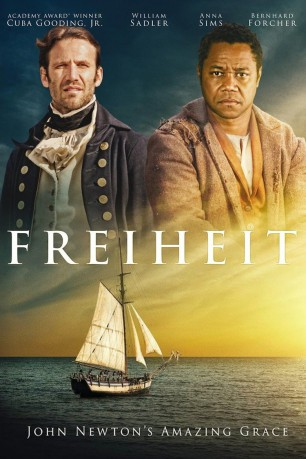

#3776 Freiheit
Alternativ: Freedom (Originaltitel)
 
 IMDB-Wertung: 6.1 / 10
IMDB-Wertung: 6.1 / 10  Metascore: 0
Metascore: 0 
Zwei Männer, 100 Jahre getrennt voneinander getrennt, sind durch die Suche nach Freiheit miteinander verbunden. Im Jahre 1856: ein Sklave, Samuel Woodward und seine Familie, fliehen von der Plantage in der Nähe von Monroe Richmond, Virginia. Ein geheimes Netzwerk, als Underground Railroad bekannt, bringt die Familie auf ihrer Reise in den Norden nach Kanada. Allerdings werden sie von dem unerbittlichen Sklavenjäger Plimpton verfolgt. Gejagt wie ein Hund, wird Samuel gezwungen, sich zwischen Rache und Freiheit zu entscheiden. 100 Jahre früher in 1748: John Newton, der Kapitän eines Sklavenhändlers, segelt von Afrika mit einer Ladung von Sklaven nach Amerika. An Bord ist Samuels Urgroßvater, dessen Überleben von Kapitän Newton abhängt. Diese Reise ändert Newtons Leben für immer...
Jahr: 2014
Dauer: 94 Minuten
FSK:
Land: USA Studio: IITonspuren:
Untertitel: Deutsch,
Auflösung: 720p (1280x720) Größe: 2795 MB
Genre: Drama, Musik, Familie
Regisseur: Peter Cousens
Drehbuch: Mark Doherty
Soundtrack:
Darsteller:
 Cuba Gooding Jr. als Samuel
Cuba Gooding Jr. als Samuel William Sadler als Plimpton
William Sadler als Plimpton Sharon Leal als Vanessa
Sharon Leal als Vanessa David Rasche als Jefferson Monroe
David Rasche als Jefferson Monroe- Terrence Mann als Barney Fagan
 Michael Goodwin als Garrett
Michael Goodwin als Garrett- Phillip Boykin als Big Hand
 Diane Salinger als Fanny
Diane Salinger als Fanny- Bart Shatto als McGee
- Tony Sheldon als Drew
- Jubilant Sykes als Ozias
- Peter Cousens als Seaton Cervisse
- Jully Anicette als Plantation Slave
- Aaron Bantum als Jim , rumored
- Rasheem Brown als Gambian Slave
- Robert Carne als Barnaby Chase
- Dara Coleman als Davey
- Victor Costa als Guard Two
- Alex Daunis als English Churchgoer / Townsperson
- Clemmie Evans als Charlotte
- Hugues Faustin als Young Slave
- Bernhard Forcher als John Newton
 John Franchi als Slave Buyer
John Franchi als Slave Buyer Daniel Gerroll als Herbert Barton
Daniel Gerroll als Herbert Barton- Matthew Hall als Gambian Slave
- Oberon K.A. Adjepong als Siding Slave One
- John Keating als Bosun
- P.J. Lane als Police Bull
- Sean Leser als Sailor
- Laurent Mullen als Charleston Townsperson
- Dayo Olatokun als Slave 153
- Markley Rizzi als English Churchgoer / Townsperson
- Jermaine Rowe als Barnyard Slave 5
 Michael Sirow als Guard One
Michael Sirow als Guard One- Harry Smith als Ship's Surgeon
- Luke Smith als Musician Two
- Travaris Spears als Fassena
- John Coleman Taylor als Minister
- Jeffrey Thibeault als Plantation Overseer
- Terrance Thomas als Railroad Slave 3
- Jordy Tulleners als Best Man
 Byron Utley als Frederick Douglass
Byron Utley als Frederick Douglass- John Thomas Waite als Giddens
- Daniel J. Watts als Siding Slave Two
- Phyllis Bash als Adira , rumored
- Anna Sims als Mary
- Ben Thompson als Willie
- Ed Ahlberg als Pikesville Townsperson
- Courtney Alexander als Plantation Slave
- Michael Antoine als Plantation Slave
Datei: X:\2014(A-F)\Freiheit (2014, FSK, 1280x720).mkv seit 08.06.2016
Festplatte: HD 2013(I-Z)-2014(A-Z)
 Es gibt insgesamt 119 Filme in der Gruppe '2014(A-F)'
Es gibt insgesamt 119 Filme in der Gruppe '2014(A-F)'